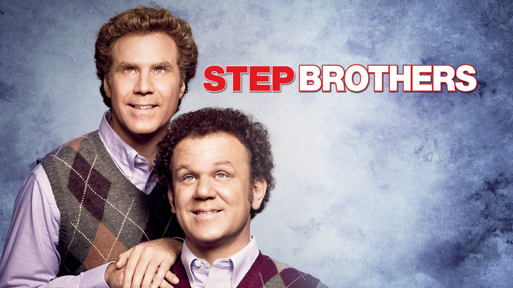

|  | Movie Review |
| Director | Adam Mckay |
| Leading Actors | Will Ferrell and John C Reilly |
| Leading Actress | Mary Steenburgen |
| Rating | R |
| Description | Brennan Huff (Will Ferrell) and Dale Doback (John C. Reilly) have one thing in common: they are both lazy, unemployed leeches who still live with their parents. When Brennan's mother and Dale's father marry and move in together, it turns the overgrown boys' world upside down. Their insane rivalry and narcissism pull the new family apart, forcing them to work together to reunite their parents. |